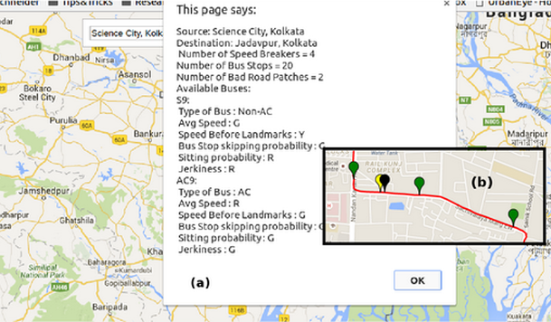

About
Bus transports in the cities of many developing countries are marred with severe problems, like information unavailability, bad road and bus conditions, lack of proper scheduling and timing, and so on. An information service can become extremely handy for the travelers in countries with emerging economy, where public traffic systems are generally riddled with uncertainty. However, the penetration of smart-phones in everyday life could be exploited to find possible solutions. We have developed CrowdMap an intelligent data logging module for smart-phones and a server side processing mechanism to extract road and bus route information, and to annotate them over the city map.
Challenges
Multiple challenges had to be tackled to develop CrowdMap. We list here the major ones:
- Developing an intelligent data logging system
- Automatically sense route signatures or landmarks like speed breakers, turns, etc
- Generate the complete trajectory of the bus using only inertial sensor data
- Discover a unique bus route on the map
Contributions
We propose a crowdsource based solution, CrowdMap that tackles the problems discussed earlier. CrowdMap seamlessly
discovers the bus routes, and embeds the annotated route information on the city map. The major contributions of
CrowdMap are:
- A data collection module that uniquely identifies the user is in a bus and logs required data
- Detects and tags landmarks
- Generates a trajectory of the route travelled by the user
- Annotate bus routes on map alongwith comfort level information
